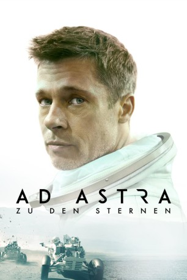

gesehen am 10.12.2019
gesehen am 10.12.2019Alternativ: Ad Astra (Englischer Titel) gesehen am 10.12.2019
 
 IMDB-Wertung: 6.8 / 10
IMDB-Wertung: 6.8 / 10  Tomatometer: 84
Tomatometer: 84  Metascore:
Metascore: 
NASA-Raumfahrt-Ingenieur Roy McBride ist ein glücklich verheirateter, leicht autistischer Einzelgänger, der es nie verwunden hat, dass sein Vater vor 20 Jahren zu einer mysteriösen Mission zum Neptun aufbrach, von der er nie zurückkehrte. Er wollte dort nach intelligentem, außerirdischen Leben suchen und hat dabei mit höchst gefährlichem Material experimentiert. Warum sein Vater nie zurückkehrte und ob er fand, wonach er suchte, möchte Roy nun endlich herausfinden: Er startet selbst in den Weltraum und stößt dabei auf Geheimnisse, die alles, was wir über die menschliche Existenz und unseren Platz im Universum zu wissen glaubten, in Frage stellen - denn die Experimente seines Vaters bedrohen das ganze Solarsystem. Eine "Welle" ist entstanden, die zu gefährlichen Technikausfällen und Flugzeugabstürzen führt... Roy tritt mutig die Mission an, an deren Ende die Vernichtung der Arbeit seines verehrten Vaters stehen könnte.
Jahr: 2019
Dauer: 123 Minuten
FSK: 12
Land: USA Studio: Twentieth Century FoxTonspuren: DTS - ,
Untertitel: Deutsch, Englisch,
Auflösung: 1080p (1920x800) Größe: 7229 MB
Genre: Thriller, Drama, Sci-Fi, Abenteuer, Mystery
Regisseur: James Gray
Drehbuch: James Gray, Ethan Gross
Soundtrack: Max Richter
Darsteller:
 Brad Pitt als Roy McBride
Brad Pitt als Roy McBride Tommy Lee Jones als H. Clifford McBride
Tommy Lee Jones als H. Clifford McBride Ruth Negga als Helen Lantos
Ruth Negga als Helen Lantos Donald Sutherland als Thomas Pruitt
Donald Sutherland als Thomas Pruitt Kimberly Elise als Lorraine Deavers
Kimberly Elise als Lorraine Deavers Loren Dean als Donald Stanford
Loren Dean als Donald Stanford Sean Blakemore als Willie Levant
Sean Blakemore als Willie Levant LisaGay Hamilton als Adjutant General Vogel
LisaGay Hamilton als Adjutant General Vogel John Finn als Brigadier General Stroud
John Finn als Brigadier General Stroud John Ortiz als Lieutenant General Rivas
John Ortiz als Lieutenant General Rivas Freda Foh Shen als Captain Lu
Freda Foh Shen als Captain Lu Ravi Kapoor als Arjun Dhariwal
Ravi Kapoor als Arjun Dhariwal Liv Tyler als Eve
Liv Tyler als Eve Elisa Perry als Woman in White Pants / Shirt
Elisa Perry als Woman in White Pants / Shirt Daniel Sauli als Sal
Daniel Sauli als Sal Greg Bryk als Chip Garnes
Greg Bryk als Chip Garnes Natasha Lyonne als Tanya Pincus
Natasha Lyonne als Tanya Pincus Anne McDaniels als Shunga Hologram (uncredited)
Anne McDaniels als Shunga Hologram (uncredited) Rochelle Rose als BBC News Reporter (uncredited)
Rochelle Rose als BBC News Reporter (uncredited) Valeri Ross als Moon TV Guest #1 (uncredited)
Valeri Ross als Moon TV Guest #1 (uncredited)Datei: X:\2019(A-F)\Ad Astra Zu den Sternen (2019, FSK12, 1920x800).mkv seit 10.12.2019
Festplatte: HD 2018(G-Z)-2019(A-Z)
 Es gibt insgesamt 60 Filme in der Gruppe '2019(A-F)'
Es gibt insgesamt 60 Filme in der Gruppe '2019(A-F)'